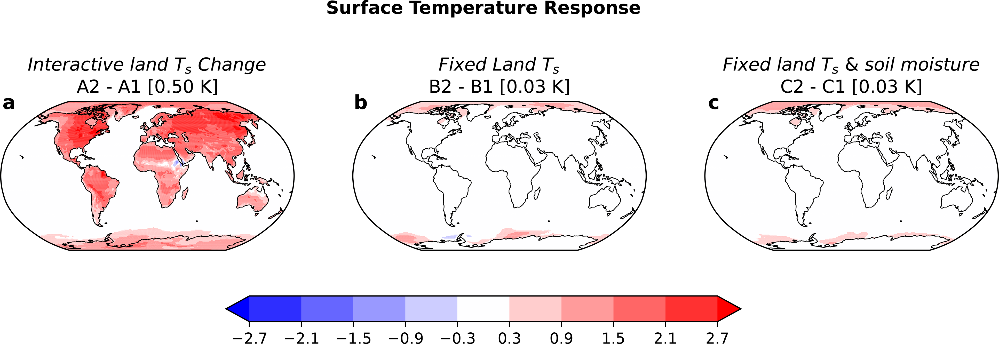
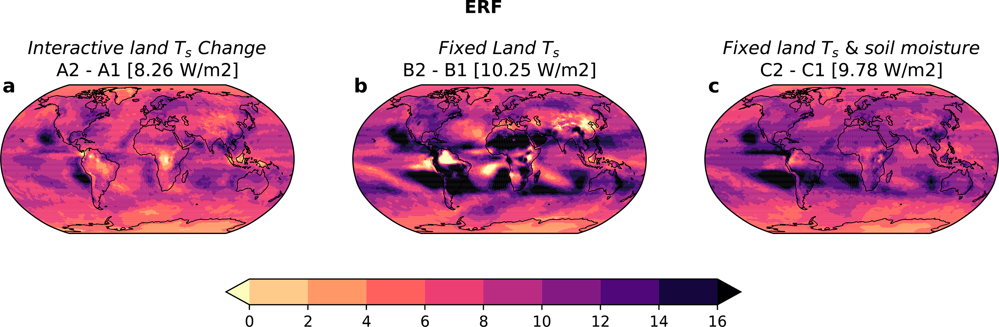
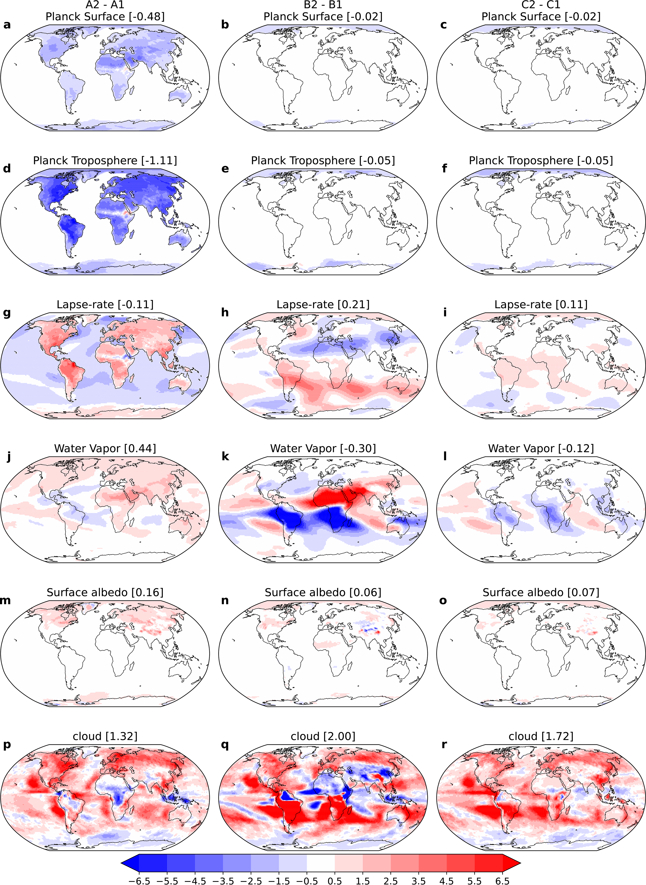
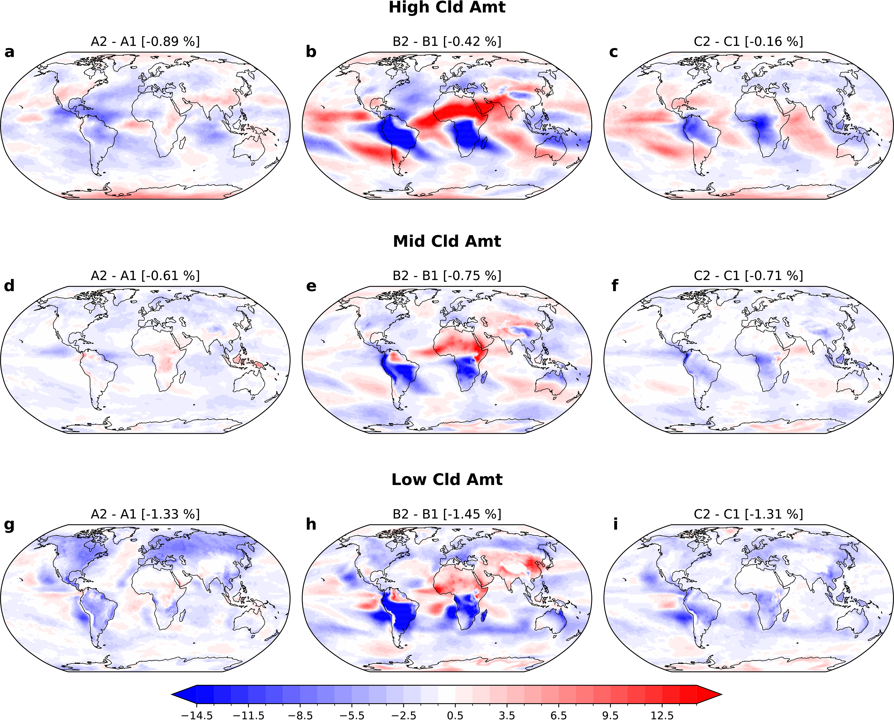
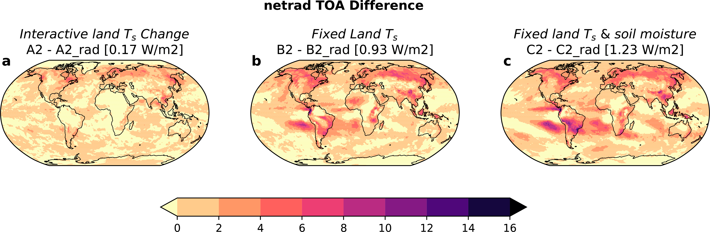
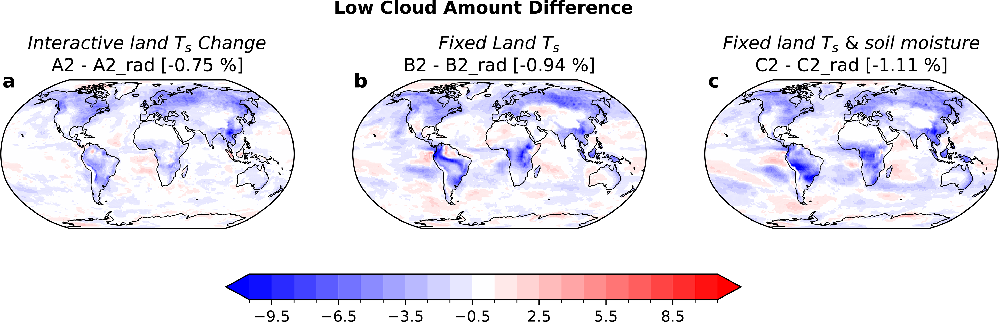

ERF Shift: 8.26 → 9.78 W m-2
Fixing land temperature and soil moisture increases estimated 4xCO2 ERF.
Forcing and Feedback • Radiative Feedbacks
Journal of Climate (2026)
A controlled 4xCO2 framework isolates how land-temperature and soil-moisture adjustments alter fixed-SST ERF estimates via rapid land-atmosphere feedback pathways.

ERF Shift: 8.26 → 9.78 W m-2
Fixing land temperature and soil moisture increases estimated 4xCO2 ERF.
Land Controls Matter
Prescribed land state suppresses longwave cooling and alters cloud adjustments.
Hydrology Response Diverges
ERF decreases with stronger land warming, while land precipitation can increase.
Paper Citation
Zhang, B., B. J. Soden, H. He, and R. J. Kramer, 2026: Decoupling Land Surface Effects from CO2 Effective Radiative Forcing in a Climate Model. Journal of Climate, 39, 65-80. https://doi.org/10.1175/JCLI-D-25-0231.1
How much of fixed-SST 4xCO2 effective radiative forcing reflects true atmospheric adjustment versus land surface responses that emerge when land temperature and soil moisture are interactive?
Extracted directly from Zhang et al. (2026), Journal of Climate, https://doi.org/10.1175/JCLI-D-25-0231.1.
Figure 1
Figure 2

Figure 3

Figure 4

Figure 5

Figure 6
